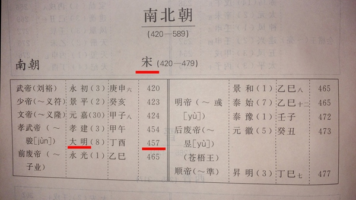

列支敦士登，瓦杜兹
几年前的一天，我去新华书店白蹭书读，当时在读一本有关欧洲史的书，书里提到了一个年份：“公元457年”，我这人有一个习惯，只要读到一个年份就得想想这个年份对应的是中国的哪个时代。
可是当时我在那回忆半天也没想起来，于是就捏着下巴在那书架前边嘀咕：“公元457年是中国的什么时代来着？”
这时候我身边有一个长得好像有话好好说里的李保田的大叔看了一眼我，笑了笑说：“宋朝。”
我当时心里“啊？”了一下，心想公元960年赵匡胤陈桥兵变才建立了宋，这差出去好几个世纪啊。
然后那大叔又推了一下眼镜说：“嗯，应该是大明。”
我忍不住“切”了一声，心想：“傻冒，公元1368年朱元璋称帝才有了明朝，这都快差出1000年了好吗？”于是我翻了一下白眼没理他，把书塞回书架就回家了。
但是当时我一直没忘了这件事，回到家以后就查工具书，想看看457年到底是中国的哪个时代。
后来我发现书上是这么写的：

诸位，你们体会过被文化人吊起来打的感觉吗？